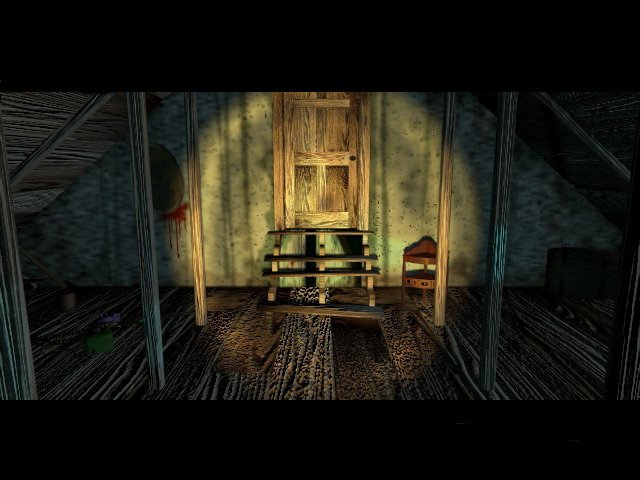
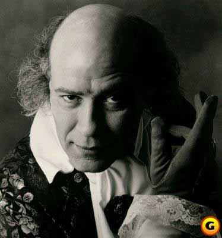

"No, no more."
Who is the real Henry Stauf? Who was the actor who played him? All will be revealed in the attic.

This bit is from a site dedicated to Robert:
"Mr. Hirschboeck was raised in Wisconsin and California and holds degrees
from the University of California, Berkeley and Southern Oregon State
College. Among his list of credits are seasons with the Oregon
Shakespeare Festival, Berkeley Repertory Theater, the Colorado
Shakespeare Festival, and the San Jose Repertory companies.
Hirschboeck is also a founding partner and Artistic Director for the
Stage Door Theatre in Boulder, Colorado and lives with costume
designer, Deb Dryden, and Sophie the dog in Ashland, Oregon. "
Here is what he has to say about the role:
"Henry Stauf is deliciously evil. He can give you everything and he knows what's in your soul.
He's your best and worst nightmare. And he'll get you everytime."
Robert has this to say about acting in front of a blue screen:
"You have to find a balance between what is real and something that is abstract."
A short list of comments from Henry:
Not the same as on tv, eh Carl?
Perhaps, you misunderstood the clue?
Are you trying to think, or have a movement?
You're driving me to the EDGE!
HAHAHAHAHA OH OH OH HAHAHA!
Careful now, you don't want to guess something right, now would you?
Even Obi Wan can't help you with this one, Carl
Didididididi, if you only had a brain.
This looks like another case unsolved.
STRIKE!
Can't function without your cuecards?
This looks like a case for Heraldo.
Say, did you cut the cheese?
Ah, your mother wore combat boots.
Goodnight, don't let the bedbugs bite.
You have the intellect of a bananaslug, and the same good looks.
Close, but no cigar.
Battle by logic, film at eleven.
AArgh, I'll get you next time.
No angels here, buddy boy.
Oh, bad move.
Oh oh, be careful I simply must speak to the housekeeper about putting all these things away.
You don't have to be crazy to play here, but it helps.
Curse you.
Dem Bones, dem Bones, dem dry Bones.
Hello, is anybody home in there?
Hmmmmmbrmm, quit horsing around.
HAHAHAHAHAHAHA HIHIHIHIHI.
Is a frontal labotomy required for this activity?
Your days are numbered.
Going nuts?
Ready to snarl, Carl?
Peace man! A piece here, a piece there, hahahaha.
Scratch, rock 'em.
Frankly Carl, I don't give a damn.
Work with me here, sport.
Yawn, oh hmmm.
The wav collection in the dining room contains lots of Henry wav's.
The site completely dedicated to Robert Hirschboeck can be found here.
If you want to take a peek outside, go here It's also the place where you can discuss the meaning of life with other lost souls like me. In other words, The Staufmansion-line messageboard is right next door.